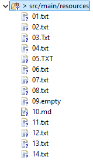

Your task is to finish implementation of the class SongsVisitor in such way that the method visitFile reads and stores the first line of each .txt file in the requested subtree (.txt can be in any case).
The method getFirstLines() should return set of all first lines, but in such way that if we iterate that set, strings would be order by the length, and in the case of same length, natural order would be used. For example, if first lines in 5 files are Bob, Jack, Bill, Cecilia, and Dave the tree printout would be
Bob
Bill
Dave
Jack
Cecilia
The method getFiles() returns how may txt files were in the subtree. For example, if the subtree is like in figure below, the result would be 12.

You may assume that txt files are not empty (i.e. they contain at least one line).